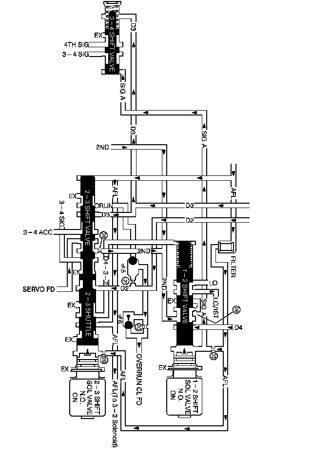

4L60-E / 4L65-E / 4L70-E Automatic Transmission
DTC P0751

Circuit Description
The 1-2 shift solenoid (SS) valve controls the fluid flow acting on the 1-2 and 3-4 shift valves. The 1-2 SS valve is a normally-open exhaust valve that is used with the 2-3 SS valve, in order to allow 4 different shifting combinations.
If the transmission control module (TCM) detects a 2-2-3-3 shift pattern, then DTC P0751 sets. DTC P0751 is a type B DTC.
DTC Descriptor
This diagnostic procedure supports the following DTC:
DTC P0751 1-2 Shift Solenoid Valve Performance - No First or Fourth Gear
Conditions for Running the DTC
^ No input speed sensor (ISS) DTCs P0716 or P0717.
^ No output (shaft) speed sensor (OSS) DTCs P0722 or P0723.
^ No torque converter clutch (TCC) performance DTC P0742, P0894.
^ No shift solenoid electrical DTCs P0973, P0974, P0976, or P0977.
^ The ignition voltage is 8-18 volts.
^ The engine RPM is 500-6,500 RPM for greater than 5 seconds.
^ The transmission fluid temperature is 20-130° C (68-266° F).
^ The throttle position is 8 percent or greater.
^ The output shaft speed is 150 RPM or greater.
^ The engine torque is greater than 50 N.m (37 lb ft).
Conditions for Setting the DTC
Both of the following conditions must occur twice during the same trip:
^ Fail Case 1: The TCM commands 1st gear and the resulting gear ratio is 1.58:1-1.75:1 for 2 seconds.
^ Fail Case 2: The TCM commands 4th gear and the resulting gear ratio is 0.95:1-1.05:1 for 3 seconds.
Action Taken When the DTC Sets
^ The TCM requests the ECM to illuminate the malfunction indicator lamp (MIL) during the second consecutive trip in which the Conditions for Setting the DTC are met.
^ The TCM commands maximum line pressure.
^ The TCM freezes transmission adaptive functions.
^ At the time of the first failure, the TCM records the operating conditions when the Conditions for Setting the DTC are met. The TCM stores this information as a Failure Record.
^ At the time of the second failure, the ECM records the operating conditions when the Conditions for Setting the DTC are met. The ECM stores this information as a Freeze Frame.
^ The TCM stores DTC P0751 in TCM history during the second consecutive trip in which the Conditions for Setting the DTC are met.
Conditions for Clearing the DTC
^ The ECM turns OFF the MIL after the third consecutive drive trip in which the TCM does not send a MIL illumination request.
^ A scan tool can clear the DTC.
^ The TCM clears the DTC from TCM history if the vehicle completes 40 warm-up cycles without a non-emission related diagnostic fault occurring.
^ The TCM cancels the default actions when the ignition is OFF long enough in order to power down the TCM.
Diagnostic Aids
^ If you clear DTC P0751, and then cannot reset DTC P0751, the following conditions may exist:
- Fluid contamination
- Plugged fluid circuits
- Restricted fluid circuits
^ Refer to Shift Solenoid Valve State and Gear Ratio.
Test Description
The number below refers to the step number on the diagnostic table.
2. This step tests that the TCM commanded all shifts, that all shift solenoid valves responded correctly, but that all the shifts did not occur.